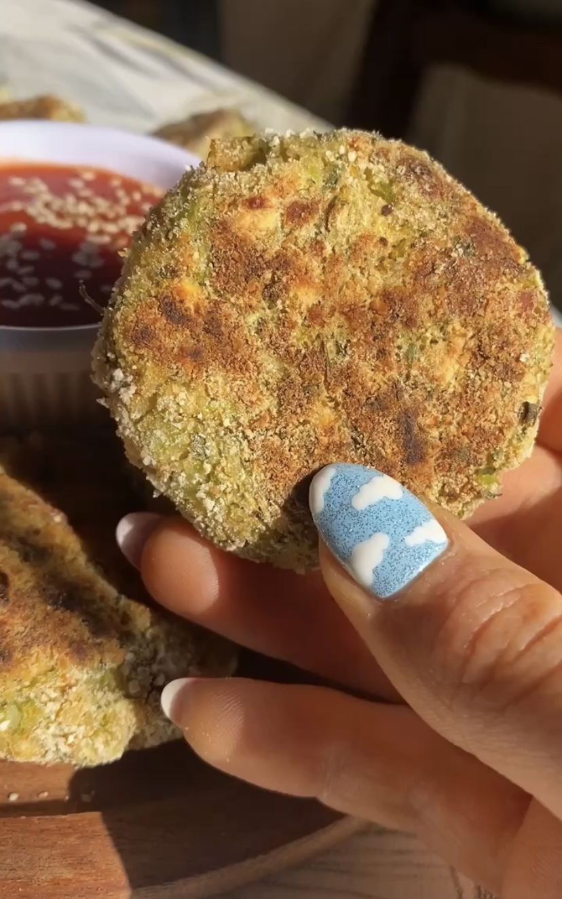
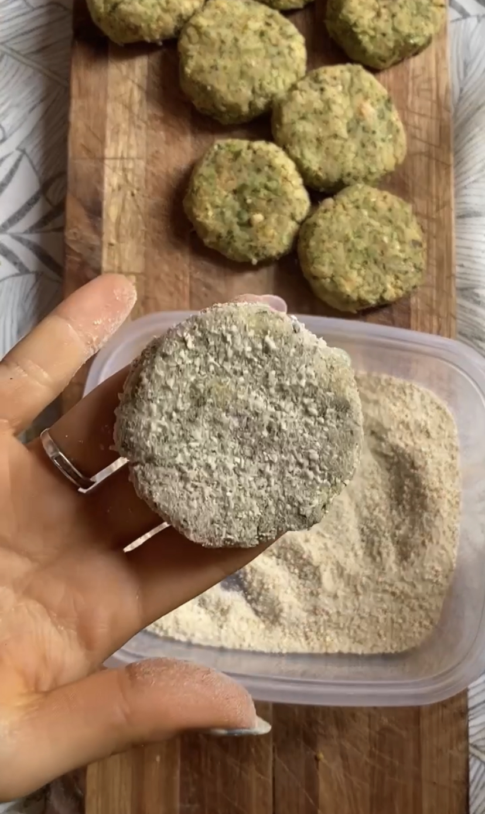

Croquetas de Brócoli y Garbanzos
GF
DF
NS

Estas croquetas son SÚPER RICAS y demasiado fáciles de hacer.
Quedan bien con todo y son ideales para viandas de grandes y chicos
Croquetas de Brócoli y Garbanzos
Nada más práctico que hacerlas y tenerlas listas en el freezer!

TIEMPO PREPARACIÓN
10 minutos
TIEMPO COCCIÓN
10 minutos
TIEMPO TOTAL
20 minutos
Porciones: 8
Platos: Almuerzo, Vianda
Tags: Veganas, Sin Gluten
Ingredientes
- 100g de brócoli cocido
- 200g de garbanzos cocidos
- condimentos: nuez moscada, pimentón, sal, pimienta
- 1 cda chica de aceite
- 1 cda de harina de garbanzos
- (opcional) rebozador a gusto
Instrucciones
- Procesá los garbanzos con el brócoli. La idea no es que se haga un puré, que quede con algo de textura.
- Pasá a un bowl y agregá el resto de los ingredientes. Probá y confirmá que está riquísimo😋 Tema consistencia: puede depender de la humedad del brócoli, la idea es que si presionás la masa se quede bien unida y no se rompa.
- Hacé bolitas, aplastalas y (opcional) rebozalas. Cociná en sartén con apenas de aceite o al horno vuelta y vuelta. ¡A COMEEER!
Tips
- Podés usar la legumbre que más te guste. Si querés que queden bien verdes, usá arvejas
- Van re bien para el freezer

Buenas, Soy Valen!
Soy vegetariana hace más de 4 años y en mi tiempo libre me divierto creando recetas basadas en plantas.
Más Sobre MíKEYS RECETAS
V
Vegano
VG
Vegetariano
GF
Gluten Free
AP
Alta en proteínas
BA
Baja en Azúcares